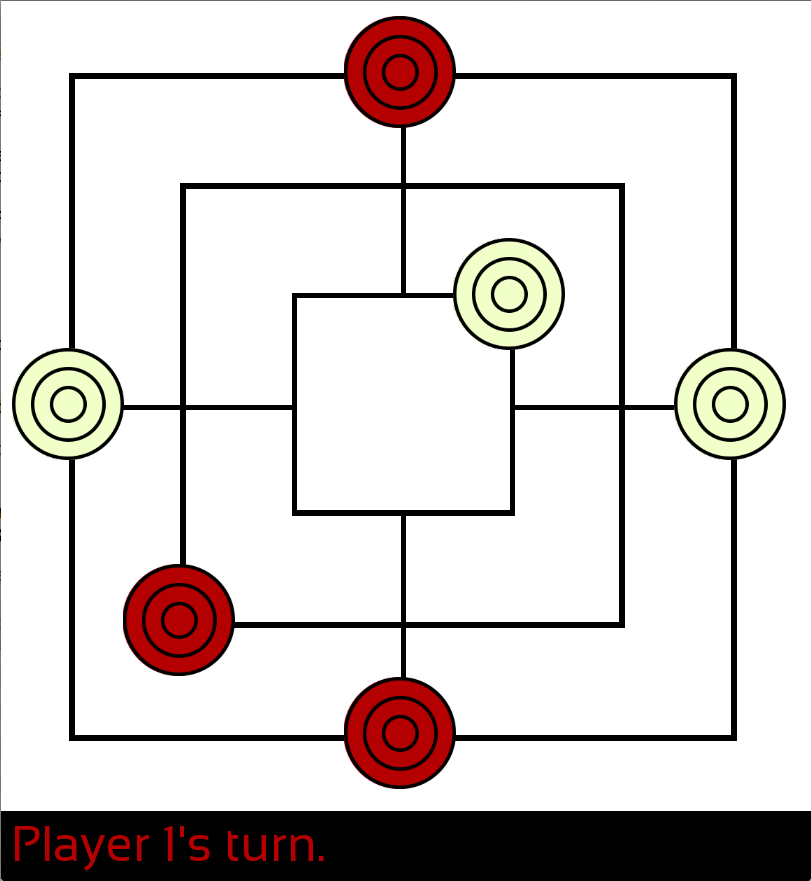
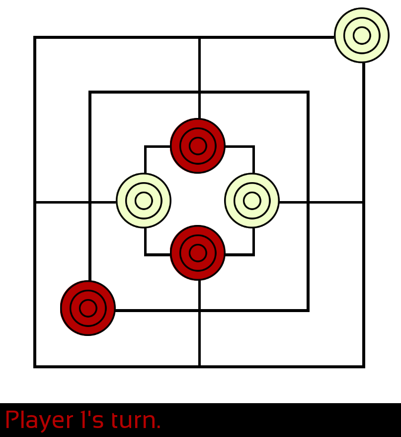

The C++ board game
I took a class in Object Oriented Programming at NYU Poly over my gap year. The following summer, a friend told be of a board game (that he learned from another friend) that I thought gave rise to interesting dynamics. So I decided it would be a fun project to bump my C++ proficiency.
The Name of the Game
Rules and Arising Mechanics
Well I actually have no idea what the game is called or where it's from. I learned about it through a friend, who learned it from another friend. I haven't seen it anywhere else, but I've been told that it exists. Anyway, this is how it works:
There are two players that play turn by turn. The game starts with an empty board, and in the first phase of the game each player sets their pawn in alternation until each has three on the board. The goal is to line up those three pawns on the board (before the other player). This basically can't be done in the first phase since it is painfully obvious when a player is going for three in a row (like in Tic Tac Toe).
However, in the second phase each player moves their pawns in alternation one at a time. The game becomes interesting as you try to line your pawns while preventing the other player from doing so. Typically, this happens by utilizing the outside of the board where the connection between pawns is less obvious.

However, you may have noticed some symmetry within the board (vertical, horizontal, diagonal and rotational). The less obvious (but cooler) symmetry is between the inner square and the outer square. You may be able to convince yourself that they are in fact interchangeable and that you can in some way flip the board "inside out". This was one of the reasons I decided to write this game. I built a function to do this flip to change the player's bias between in inside and the outside of the board.

Software Design
With all that fresh Object Oriented knowledge under my belt, I of course tried to apply the finest design to the project. In retrospect, there are a few philosophical issues in that regard. Everything does run swimmingly (up until the AI, but we'll get back to that).
You can take a look at the code on Github, but here's the general idea. In main.cpp, there's the game loop, which mostly checks for events and calls the relavent classes/functions.
Then there are the classes: Logic keeps track of the board, who's turn it is and all of the Pawns. Position is internally tracked either by a single integer (0 through 24), or as a 3x8 array. The latter is used to do all of the logical computations, mainly checking whether moves are legal. The integer is mainly used when passing position between functions. I don't feel like this is a very elegant solution, and if I were to do this project all over I'd think about this a lot more. The Field and Pawn classes are used for display: the first one shows the window, the board and prints who's turn it is/who wins, while the second figures out where to print the pawns. This means that the pawn's position is tracked in different place, which again, sounds weird to me. For future work, these classes don't need to be touched, so I'm somewhat okay with leaving this as-is.
I used the Simple and Fast Multimedia Library (SFML) for all of the graphics. I was pleasently surprised at how easy it was to used. It almost felt like Python while dealing with the graphics. Though I did have one issue. I had a weird bug where the sprite wouldn't show up for one player. I checked the code for the pawn generation twenty times over, and could not see why the sprites wouldn't load. I tried switching the player's colors, and now the other color had the issue. I tried changing the colors themselves (pretty desperate), which did not help. I even tried to find someone else with a similar issue, hoping SFML was to blame, but no such luck. Finally, I tried explaining the problem to my father, partially so that he could help me out, mostly because I find it helpful to outline the issue to someone else. As I was describing that the vector of pawns should be passed by reference rather than by value to a particular function, you guessed it, I realized that I had it wrong.
Here's the kicked though: it shouldn't have worked at all. The pawns shouldn't have been initialized, and they shouldn't have showed up on the board. Yet they did. So after all, it wasn't nearly a graphical glitch. My best hypothesis is that the sprites were at the top of the call stack for that function, which for some reason was only partially deleted by the compiler(???). I may be remembering this somewhat incorrectly, but to make a long story short: I learned that partial failure is the worst kind of failure to debug.
Playing Against the Compuer (a work in progress)
Due to the interesting mechanics, I thought that developping an Artificial Intelligence (and I'm using the term quite loosely here) would be a fun exercise.
I learned about the MiniMax algorithm and it seemed perfectly suited for the problem: a player has to chose between at most one of twelve options, often less. Therefore, the tree of possibilities is relatively small compared to other games MiniMax is used for (such as chess).
I'm currently working on implementing the algorithm. I grasp it conceptually, but I'm having difficulties with the details of, well, implementation.
An important aspect of MiniMax is finding an appropriate evaluation function. The current prototype simply looks at the cartesian distance between pawns: the smaller the better. In the future, I think I can figure out an algorithm to determine the distance between the current pawn position and the closest lineup. The braintwister comes when the other player's pawns are taken into account. I might look into modifying A star (a pathfinding algorithm) or merging it with MiniMax. In my experience, it isn't too difficult for humans to evaluate a board, so it could be fun to implement a Machine Learning algorithm to learn what constitutes a good board. Regardless I'll get to that once the MiniMax itself works.
Future Work
This was a fun project to work on and I've learned a lot about using C++ and Object Oriented Programming in general.
I really want to get the AI to work at some point, but this project has fallen behind in light of work at Olin. However, once the MiniMax algorithm is correctly implemented, I'll try to compare the different evaluating functions outlined above. One way would be to match one algorithm against another.
After that, I'll plan on learning how to package the code such that people can actually play it! The goal was never really to release a product, but this would be another learning experience. Until then, the source code is available on Github, so if you really wanted to you could play it with a friend.